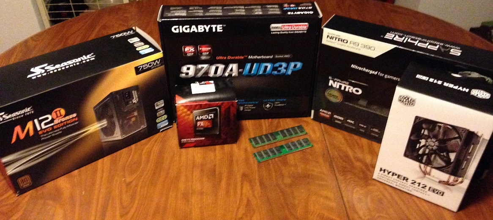

Welcome to Homemade Logic, a site designed to help the average PC user through the process of building their own computer. While this process sounds daunting to at first, it is really no more difficult than snapping together legos, albeit very expensive legos. The only difference is that, with computers, the parts only fit together one way.
Before you begin building your own computer, you'll first need to ask yourself a few basic questions:
1. "What am I going to be using this computer for? Regular day to day tasks like email or web surfing? Work or school related productivity apps like word or excel. Or computationally intensive tasks like rendering, video/audio encoding, or 3d gaming."
2. "What is my level of technical knowledge? Am I familiar with assembling mechanical or electrical things? Do I possess a basic understanding of computer components and their function?"
3. "Finally, and perhaps most importantly, how much am I willing to spend."
What you plan to use your computer for will typically dictate how much your new PC will cost. Since detailed pricing information and part compatibility explanations are outside the scope of this site, I suggest you visit Logical Increments, which compiles pricing and part compatibility information on almost all computer parts. This is one of the most trusted sites for this information, and it even features a handy table with suggested builds based on a wide range of budgets.
While there are many places to purchase computer parts, the most reliable and trusted Online retailers are Newegg and Amazon, while a popular brick and mortar store is Micro Center.
I suggest you read ahead for my notes on power supplies before you make any purchases. Once thats finished, we can start the build!
If you're ready to get started, lets begin by installing your power supply.
Once you've finished your build, I would appreciate any feedback you would be willing to offer. Feel free to complete the form below.
Homemade Logic
Matthew Buchanan